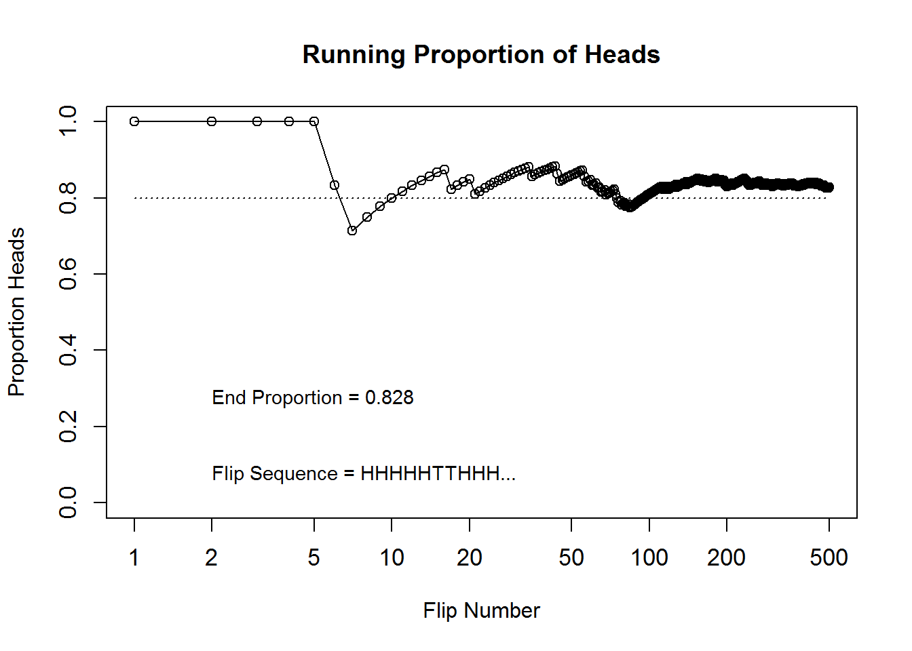

Modify the coin-flipping program RunningProportion.R to simulate a biased coin that has \(P(H)=0.8\), change the height of the reference line in the plot to match \(P(H)\)
N <- 500 # Specify number of flips
# Create sequence of flips using sample
flipsequence <- sample(x = c(0, 1), prob = c(0.2, 0.8), size = N, replace = TRUE)
# Compute the running proportion of heads
r <- cumsum(flipsequence)
n <- 1:N
runprop <- r / n
# Plot the running proportion
plot(n, runprop, type = "o", log = "x", xlim = c(1, N), ylim = c(0, 1), cex.axis = 1.1,
xlab = "Flip Number", ylab = "Proportion Heads", main = "Running Proportion of Heads")
# Add line at y=0.8
lines(c(1, N), c(0.8, 0.8), lty = 3)
# Annotate plot
flipletters <- paste(c("T", "H")[flipsequence[1:10]+1], collapse="")
displaystring <- paste("Flip Sequence = ", flipletters, "...", sep="")
text(2, 0.1, displaystring, adj = c(0, 1), cex = 0.9)
text(2, 0.3, paste("End Proportion =", runprop[N]), adj = c(0, 1), cex = 0.9)
Determine the exact probability of drawing a 10 from a shuffled pinochle deck. (A pinchole deck has 48 cards, there are six values: 9, 10, jack, queen, king and ace. There are two copies of each value in each of the standard four suits: hearts, diamonds, clubs and spades.)
What is the probability of getting a 10?
There are eight 10’s in the 48 cards, so \(P(10) = 8/48\) = 0.1666667
What is the probability of getting a 10 or a jack?
There are eight 10’s and 8 jacks, so \(P(10 or jack) = 16/48\) = 0.3333333
Consider a spinner with a \([0,1]\) scale on its circumference. Suppose that the spinner is slanted or magnetised or bent in some way such that it is biased, and its probability density function is \(p(x) = 6x(1-x)\) over the interval \(x\) in \([0,1]\).
Adapt the code from Section Subsection 3.5.2 (IntegralOfDensity.R) to plot this density function and approximate its integral.
# specify interval and delta x
xlow <- 0
xhigh <- 1
dx <- 0.02
# specify points along x axis
x <- seq(from = xlow, to = xhigh, by = dx)
# calculate y values. using density function above
y <- 6 * x * (1 - x)
# plot the function
plot(x, y, type = "h", lwd = 1, xlab = "x", ylab = "p(x)", main = "6x(1-x(")
lines(x, y)Derive the exact integral using calculus
\[\int_0^1 dx(6x(1-x)) = 6\int_0^1 dx(x - x^2) = 6\left[\frac 12 x^2 - \frac 13 x^3\right]_0^1 = 6\left(\left[\frac 12 1^2 - \frac 13 1^3\right] - \left[\frac 12 0^2 - \frac 13 0^3\right]\right) = 1\]
Does the function satisfy Equation 3.3 \[\sum_i \Delta x \frac{p([x_i, x_i + \Delta x])}{\Delta x} = 1.0\]
Yes
From inspecting the graph, what is the maximal value of \(p(x)\)?
0.5